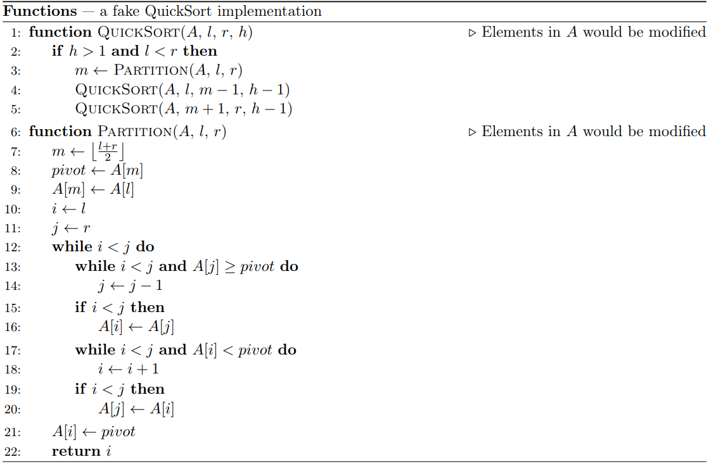

小 Q 同学刚刚又写了一个假的快速排序，如下图所示。如果他随机地选择一个 $1$ 到 $n$ 的排列 $p_1, p_2, \cdots, p_n$ 去执行QuickSort(p, 1, n, k)这个过程，你知道这个排列在执行完之后期望会有多少个逆序对吗？

提示：一个排列 $p_1, p_2, \cdots, p_n$ 的逆序对个数等于满足 $1 \leq u < v \leq n$ 且 $p_u > p_v$ 的整数二元组 $(u, v)$ 数量。
为了避免可能的精度误差，你只需要给出期望的逆序对数乘以 $n$ 的阶乘后对 $998244353$ 取模的值。显然，这个期望值乘以 $n$ 的阶乘是一个整数。
 Comet OJ
Comet OJ